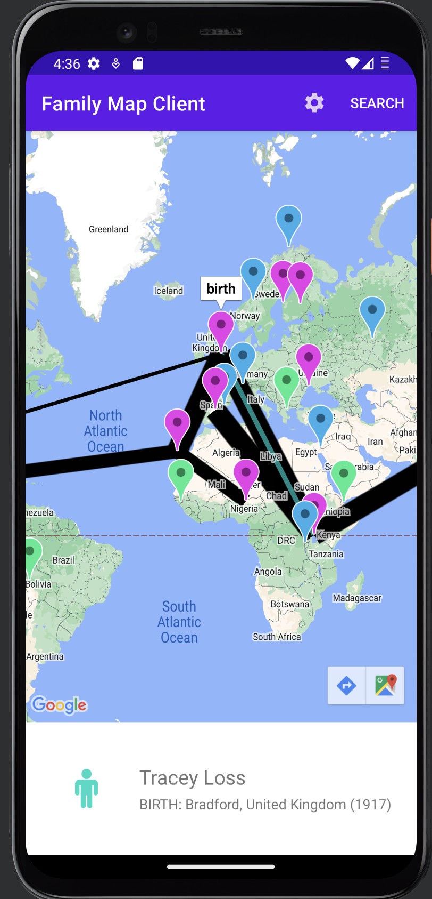
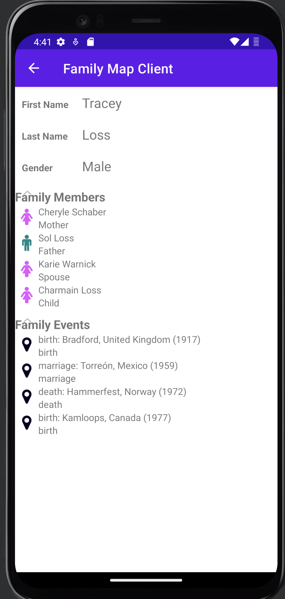

Family Search
This was done using DB browser, SQlite, Java, and Android Studio
Description
I designed a database for a family search app and built the server so that it could be quried for user information. This is accessed when the user logs in with their own unique username and password. I ran the server on my local machine and pointed the requests at that databse in order to access the different users for testing. I built the client in java using android studio to emulate the different pages and fragments. I also had to generate all the test data from recursively generating the family generations and assign events with proper dates and locations. I also built extensive test cases for both the server and the client.
 On the right is a screenshot of the map fragment part of the app being emulated through android studio. This shows how certain events were linked together using the google maps API and the event's longitude and latitude coordinates.
 On the left is a screen shot of the person page which displayed information for each person such as their relatives and important life events.
Future Iterations/Improvements
Futre iterations of this project might include a more robust error checkging and some kind of public deployment of the server through a AWS hosting service, and through google play for the client.